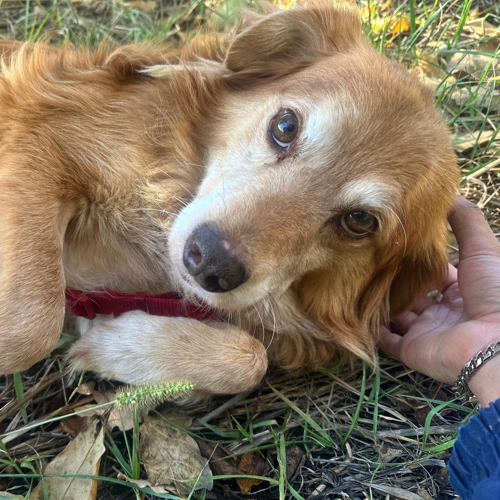
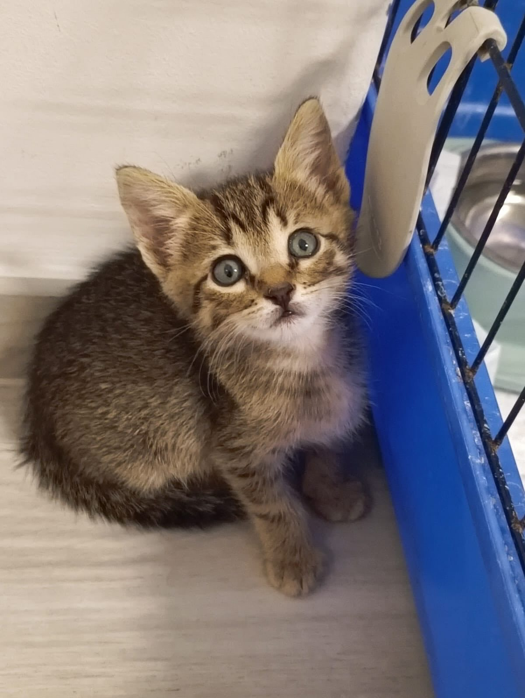
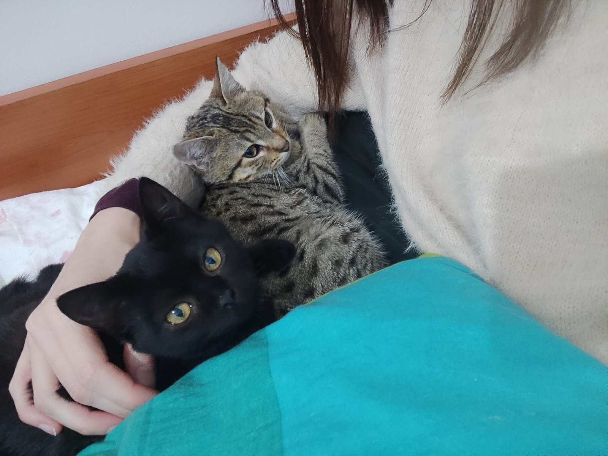
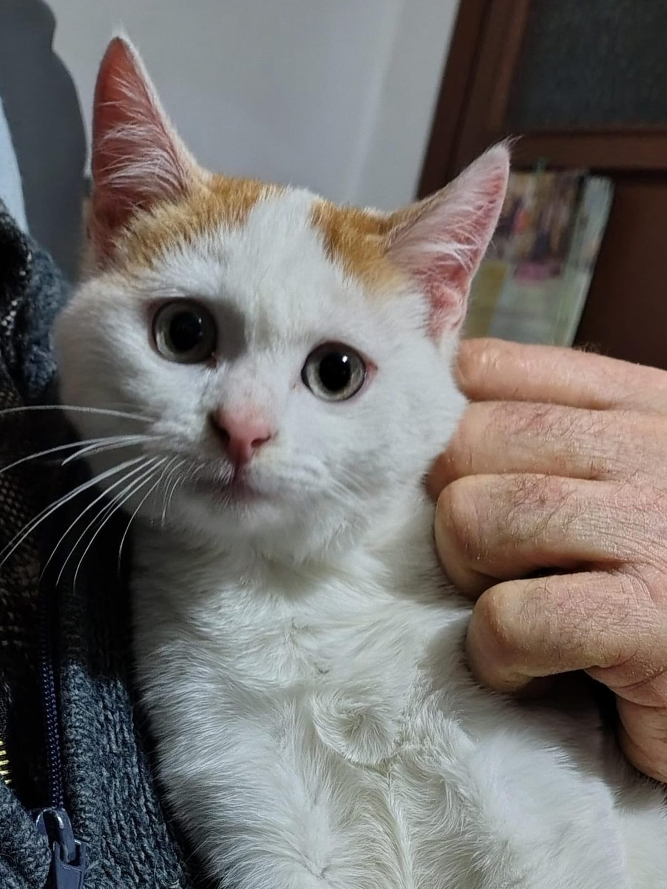

Un'adozione è una scelta che cambia due vite: quella dell'animale e la tua.
Ecco come accompagnarti — prima, durante e dopo.

Due strade per portare un amico nella tua vita: aprirgli la porta o sostenerlo a distanza.
Ogni cane e ogni gatto che accogliamo ha una storia, un carattere, tempi propri. Ci sono due modi per portare un nostro ospite nella tua vita: aprirgli la porta di casa o sostenerlo a distanza.
In entrambi i casi, se uno di loro ti colpisce, scrivici: ti faremo qualche domanda e — se si tratta di un'adozione fisica — organizzeremo un incontro. Vogliamo essere certi che sia un buon abbinamento, per lui e per te.
Accogliamo anche tanti gatti: cuccioli salvati, adulti abbandonati, micetti di colonia che hanno bisogno di una famiglia. Ognuno con il suo carattere, i suoi tempi, il suo modo di amare.



I nostri gatti disponibili cambiano spesso. Contattaci per sapere chi sta aspettando proprio te in questo momento.
Scopri chi ti sta aspettando14 punti essenziali per accompagnare te e il tuo nuovo amico dalla prima settimana in avanti,
con piccoli accorgimenti che fanno una grande differenza.
Ci contatti e ci racconti di te: la tua casa, la tua famiglia, il tuo stile di vita. Ti aiutiamo a capire quale animale potrebbe stare bene con te.
Fissiamo un appuntamento.
Se tutto va bene, iniziamo con un pre-affido: una fase di ambientamento in cui siamo a disposizione per qualsiasi dubbio o difficoltà.
Con l'adozione ufficiale, l'animale è tuo. Ma noi restiamo un punto di riferimento: il legame con Impronte non finisce mai.